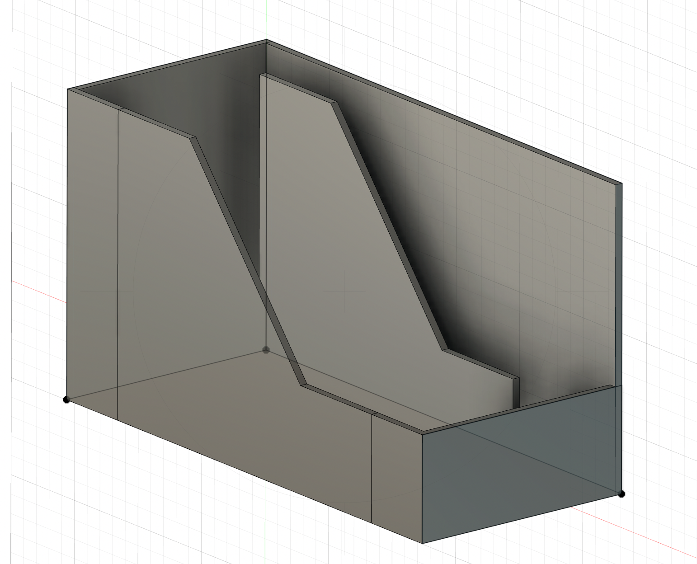
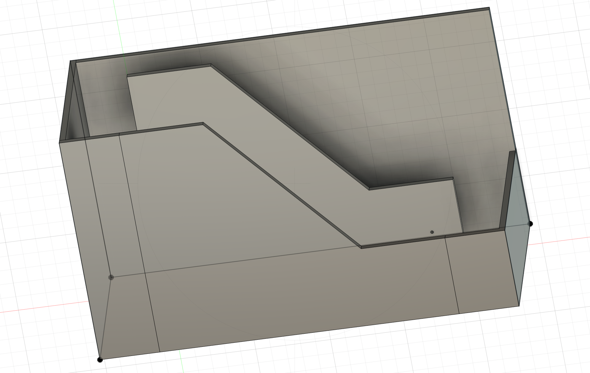
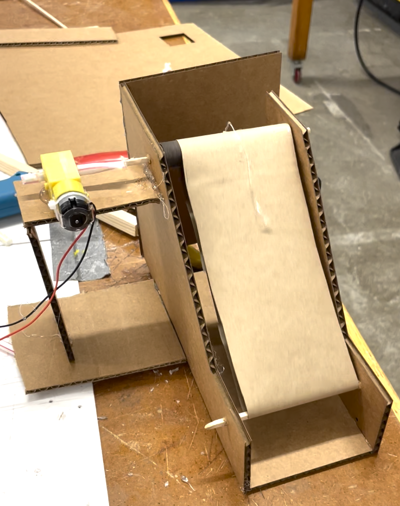

During class this week, I learned how to use a variety of different saws, including handheld pushing and pulling saws as well as the mechanical scrolling saw. I found the scrolling saw exciting because it makes it possible to make more intricate and curved designs by hand, rather than using to the laser cutter. I also learned how to use the drill, specifically practicing drilling a hole into a piece of acrylic. I could see how this drill will be very useful for materials such as wood and plastic. However, while making my kinetic sculpture, I tried to use the drill to make holes into pieces of cardboard but discovered that the clamps significantly warped the cardboard by compressing it down, which is not ideal for the sculpture. I then decided to simply use the drill bit without turning the drill on, just bringing the sharp end of the drill down onto my cardboard. Since the cardboard was so soft, this worked perfectly well and allowed me to avoid using the clamps so my cardboard didn't get squished. Lastly, we learned how to solder electronic parts onto an Arduino. This may have been my favorite part of the class, as I found it extremely cool to be able to connect things together without any of the mess that comes with using something like glue guns.
During lab, I learned how to make a few simple arrangements with the breadboard and Arduino. For example, I set up a blinking LED light and a pull down as well as a pull up resistors. While I found the coding aspect intuitive, the actual building part was pretty challenging since I don't really have much experience with circuits and breadboards. Nevertheless, I found it quite satisfying, and it definitely opens up lots of possibilites for me in terms of how I can incorporate these types of programmed circuits into my kinetic sculpture and final project.
For my kinetic sculpture, I decided that I wanted to make a mini escalator. I watched a YouTube video explaining how to make one out of cardboard, and from that I began to create my prototype in Fusion. My vision was to have an escalator that would carry marbles up a slope and drop them off at the top, where they would then roll down along a ramp back to the beginning to start the whole process over again. I created the CAD model using many of the techniques that I had learned last week when creating the finger joint box, such as extruding and joining different components together to create a full 3D model. This was really helpful to me so that I could better visualize what the overall structure would look like (please see below).
 This CAD model was actually my second iteration. My first try, I created the parts and glued all the pieces together so that I could workshop how to get the escalator belt moving. I accomplished this by creating two axles (made of dowels) that went through the top and the bottom sections of the escalator sides. The bottom axle is merely used to provide tension to the belt; it is only the top axle that is actually powering the moving of the belt. Therefore, for the bottom axle, all I had to use was a simple wooden dowel. For the top axle, since this is the one whose rotation needs to drive the movement of the belt, I needed to add something that would cause friction between the axle and the paper (so it can actually pull the paper). I did this by wrapping sandpaper around the top dowel and gluing it in place. The next thing that I had to do was create the escalator belt. I made this out of paper because I needed a material light enough to be properly pulled, and also pliable enough to be bent into a continous loop. I cut a long strip of paper and taped it into a loop, at the appropriate length to have sufficient tension in the system. At this point, I tested the ability of the belt to move. I obviously hadn't attached the motor yet, so I just turned the top dowel by hand. After several adjustments to the length of the paper belt, I managed to get it moving! This was very exciting. Here is a video.
However, though my escalator was able to move manually, I still had not attached the motor. I first tried to do this by attaching some wooden dowels to the side of the escalator and balancing the motor on top of them. However, the dowels interfered with the proper motion of the conveyer belt. Moreover, as soon as I placed the motor on the dowels, the entire structure threatened to tip over because the motor's weight threw off the balance. This clearly would not work, and in my efforts to figure out a solution I ended up kind of mangling the structure of the escalator. Another problem I ran into is that when thinking about how to potentially add steps to the conveyer belt, I realized that the steps would hit the base of the escalator when swinging around the bottom. Thus I knew I needed to raise the height of the bottom dowel so that the stairs had more clearance. This is why I decided to try again, modelling it more carefully in Fusion and building it more cleanly. My second iteration, as modelled in Fusion, is shown above.
My second time building the escalator went more smoothly because I already had some experience with how all the parts fit together. This time, I raised the height of the bottom dowel and also widened the escalator so the stairs could be a bit wider. I made the belt out of packaging paper and carefully taped it so that the overlapping sections would not be too thick/unwieldy and thus interfere with the proper rolling of the conveyer belt. This time, I was also able to get the motor properly attached by building a platform that was wider and more stable to support it. I attached the motor to the dowel using a straw as a connector, and linking them with hot glue. To my great excitement, it worked just as planned! When I plugged in the motor, the belt began rotating upwards quite quickly and smoothly. Again, I will attach a video as soon as I figure out how to do so, but in the meantime here is a picture.
My next steps for this following week are to figure out how to attach stairs to the conveyer belt so that it looks and acts more like an actual escalator, and so that it can properly transport marbles. Additionally, I need to add the ramp to take the marbles from the top of the escalator back down to the bottom. I imagine that it will take some workshopping to get the marbles to flow smoothly into the stairs of the escalator and also to stay there without rolling off. I also would like to come up with a more elegant solution for how to attach the motor, although it is fine the way it is. Finally, for next week I am going to add an aspect of programming control to the motor. I envision some sort of mechanism where the rotation of the motor can change directions, perhaps based on input from a switch, so that the escalator can transport the marbles both up and down. (I also need to figure out how to add videos into HTML to properly display my product.)
I really enjoyed this project! It taught me the importance of taking the time to properly model things in CAD, and also the value of simply trying things out and playing around to see what works and what doesn't, and then coming up with a subsequent iteration. I also realized that building 3D kinetic structures takes a lot more time than I expected because there are so many little considerations to take into account that all add up. I am pleased with my product and eager to continue working on it next week.